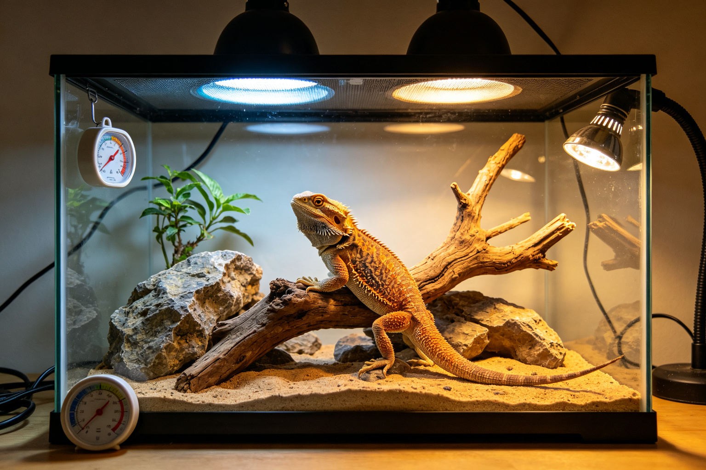
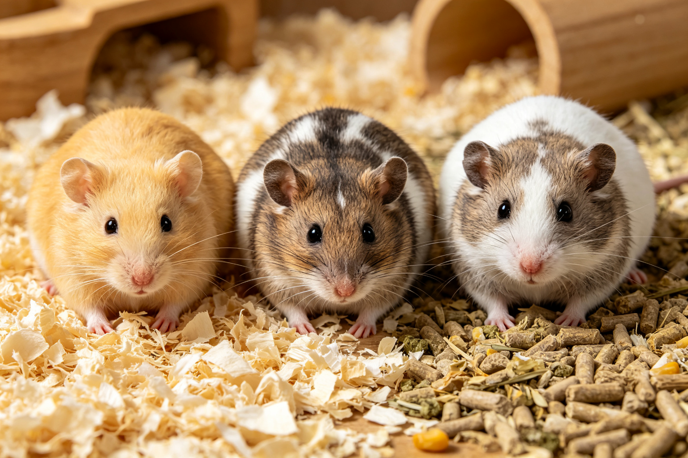
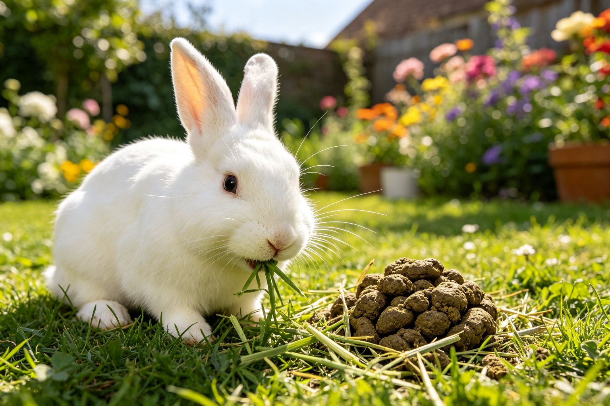
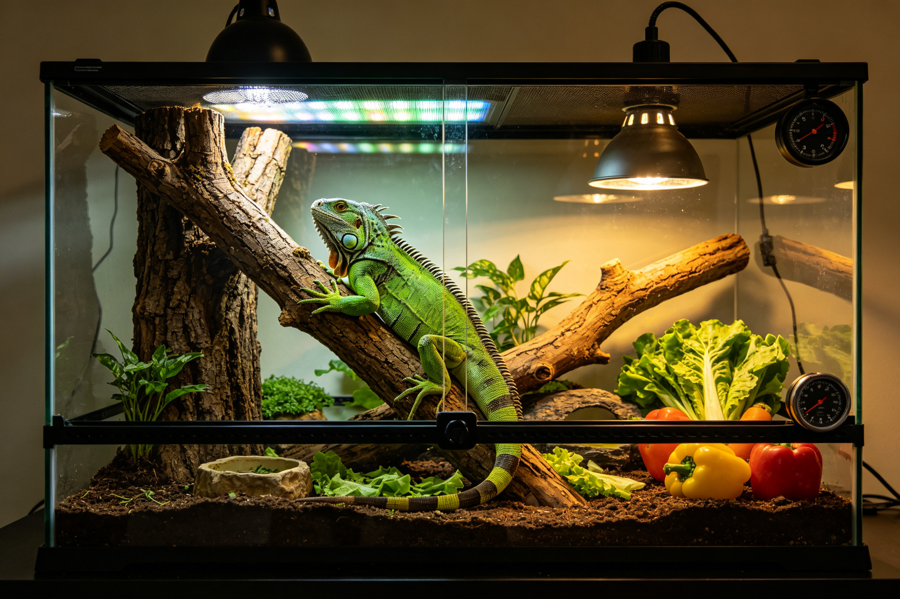
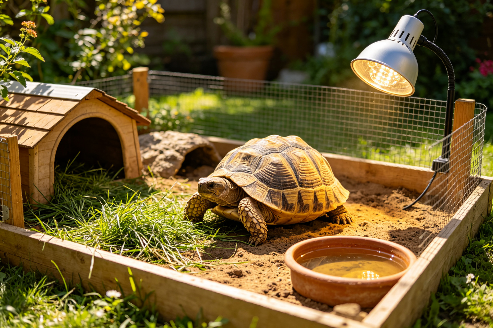
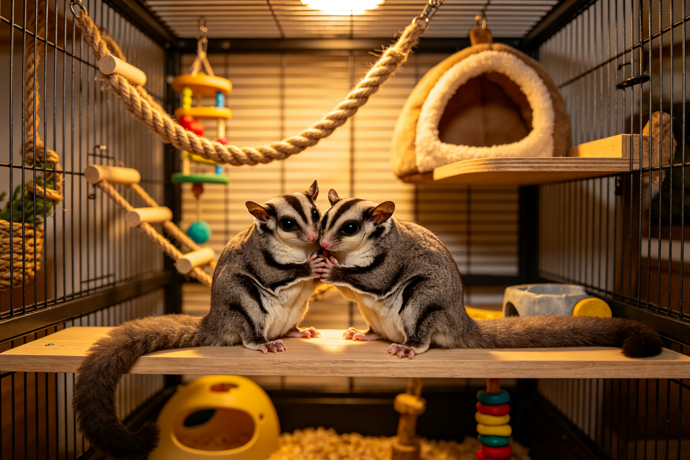
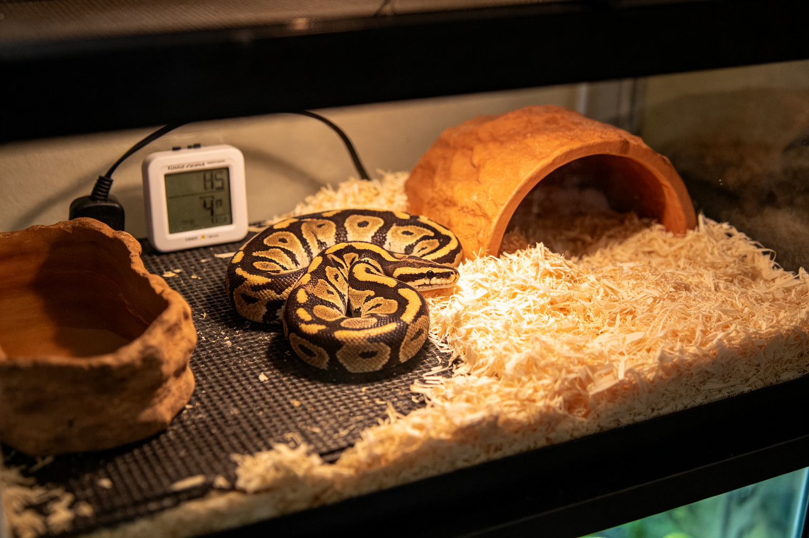
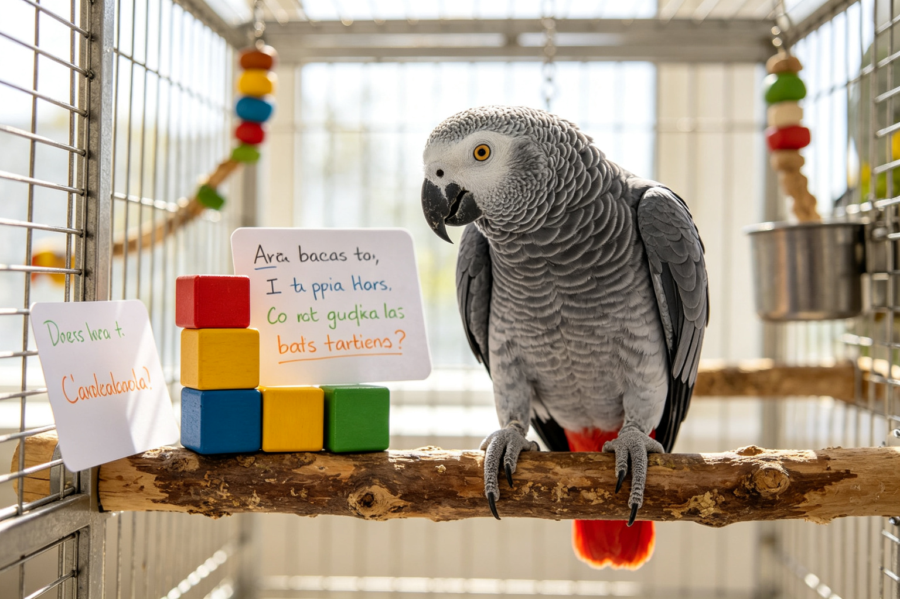
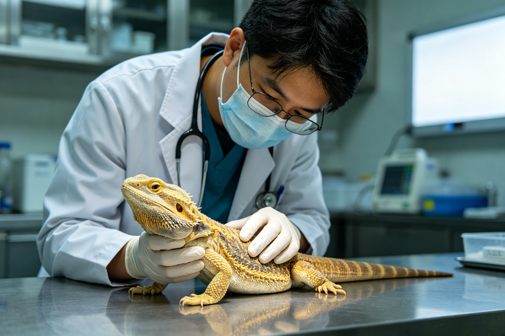

鬃獅蜥飼養：UVB、溫度與食性
鬃獅蜥是最受歡迎的爬蟲寵物之一，但多數飼主的飼養方式存在根本錯誤——UVB不足、溫度梯度不對、食物營養不均衡。從UVB燈的選擇與更換週期、熱點與冷區的溫度設定、...

倉鼠品種比較：黃金鼠、三線鼠、老公公鼠
倉鼠不只是倉鼠——不同品種的個性、體型、壽命與照護需求差異很大。黃金鼠（敘利亞倉鼠）體型大但孤獨、三線鼠（加卡利亞）親人但容易糖尿病、老公公鼠（羅伯羅夫斯基）速...

兔子消化道生理：為什麼需要24小時進食
兔子的消化道和貓狗完全不同——牠們是後腸發酵動物，需要24小時不斷進食來維持消化道蠕動，還會吃自己的盲腸便來回收營養。從兔子的消化道結構、盲腸便的作用、為什麼不...

綠鬣蜥飼養誤區：為什麼多數活不過3年
綠鬣蜥是最常被誤養的爬蟲之一——多數人用小飼養箱、燈泡加熱、餵生菜，結果綠鬣蜥在2-3年內就因代謝性骨病或腎衰竭死亡。從綠鬣蜥的真實體型（可達1.8公尺）、UV...

陸龜溫度與光照需求：保溫燈與UVB
陸龜的飼養核心是溫度與光照——不正確的溫度梯度會導致消化不良，UVB不足會造成代謝性骨病，冬眠不當可能致命。從陸龜的溫度梯度設定（熱點35-38度、冷區25度）...

蜜袋鼯社會需求：為什麼不能單獨飼養
蜜袋鼯是高度社會性的動物——單獨飼養會導致嚴重的心理問題，包括自我傷害、抑鬱、過度吠叫甚至死亡。從蜜袋鼯的野外社會結構、單獨飼養的後果、如何引進新個體、群居的性...

蛇類飼養環境配置：加熱墊與隱藏窩
蛇類的飼養看起來簡單，但環境配置的細節決定了蛇的健康與進食意願——溫度不對會拒食，沒有隱藏窩會緊張，濕度不對會蛻皮失敗。從蛇類的溫度梯度設定（加熱墊vs燈泡）、...

鳥類認知能力：鸚鵡語言與工具使用
鳥類的大腦結構和哺乳類完全不同，但認知能力卻超乎想像——非洲灰鸚鵡可以理解100多個單字的含義，新喀鴉可以製造和使用工具，鸚鵡會表現出嫉妒與同理心。從鳥類大腦的...

異寵常見急症：哪些症狀需要立刻就醫
異寵的疾病進展很快，而且很多物種會隱藏症狀——等到明顯生病時可能已經為時已晚。爬蟲的拒食與呼吸困難、兔子的胃腸鬆滯與牙齒過長、嚙齒類的濕尾與呼吸感染，這些都是需...